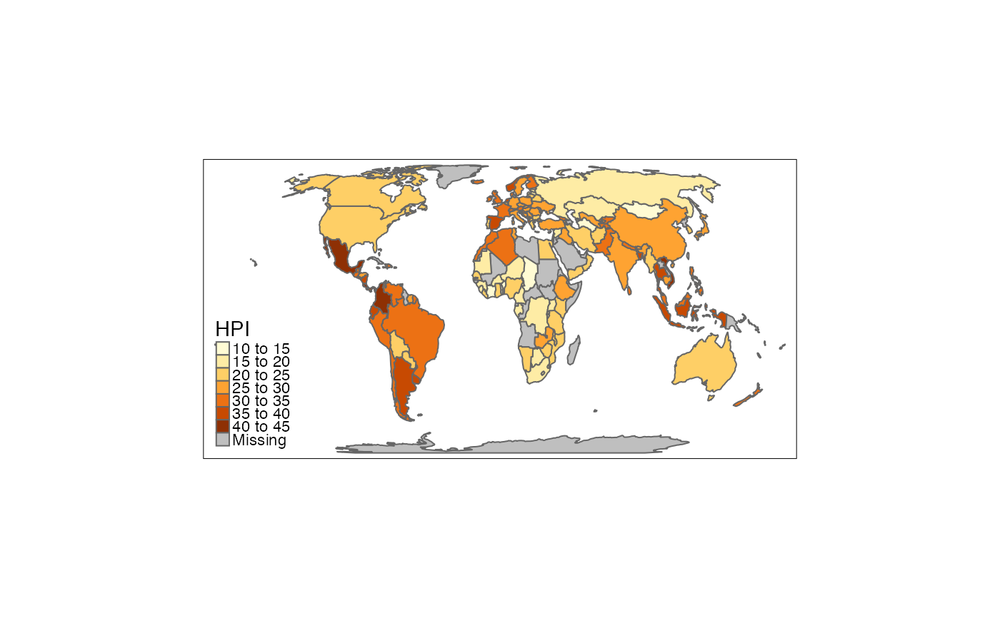
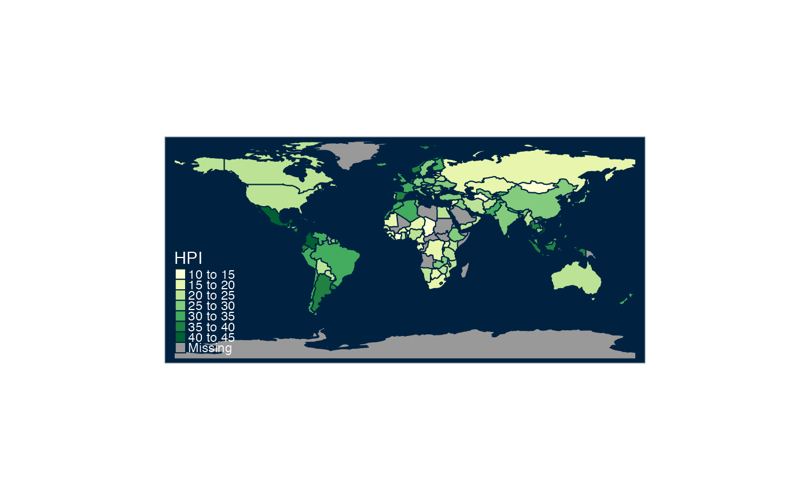
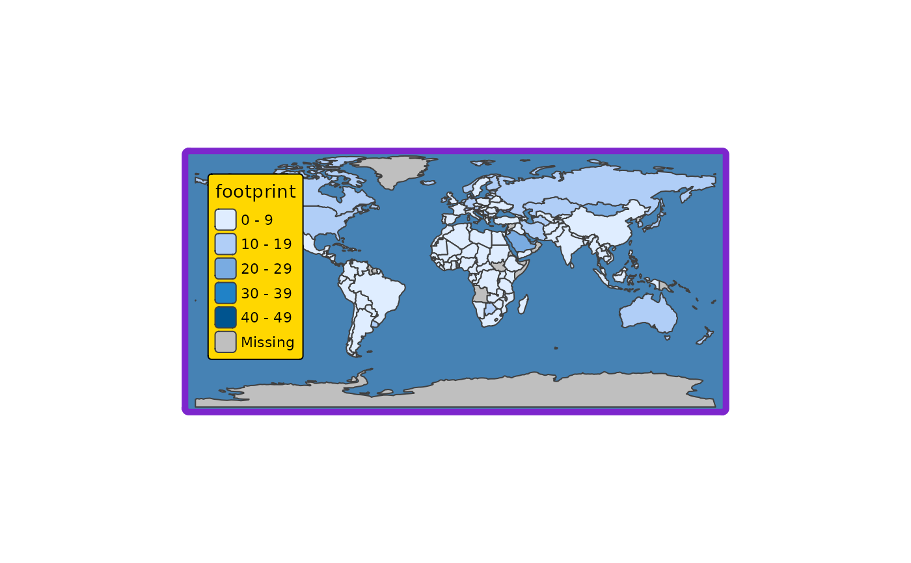
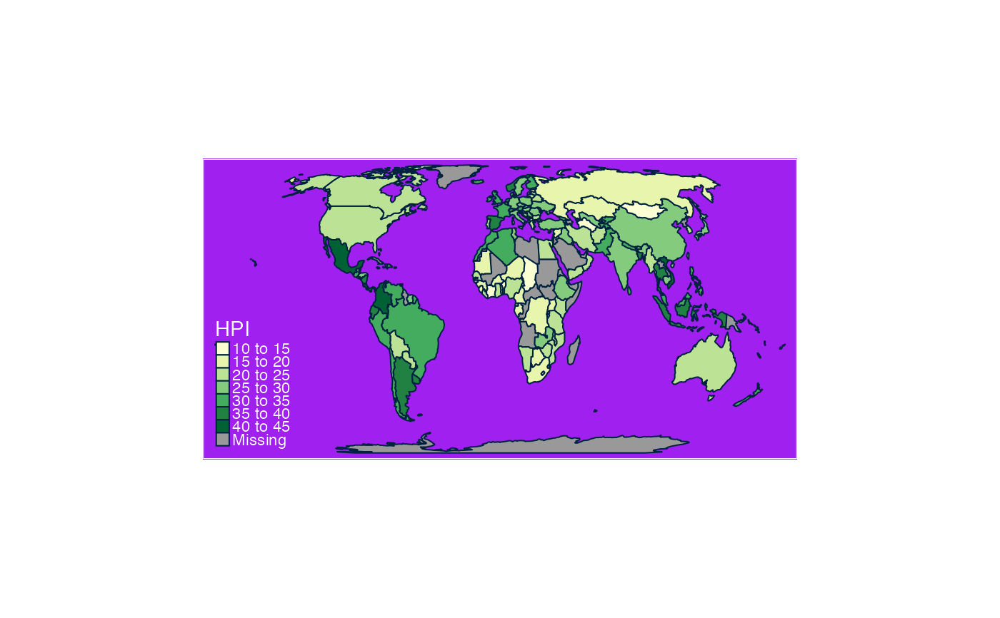
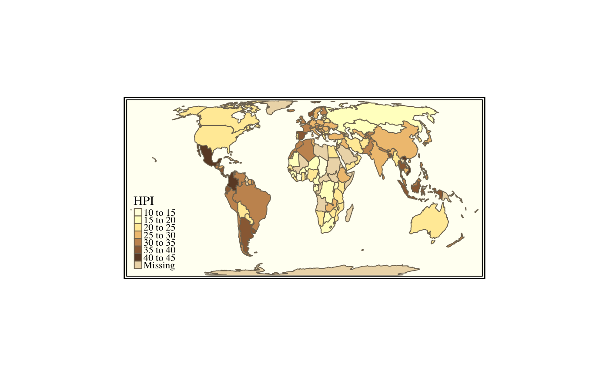
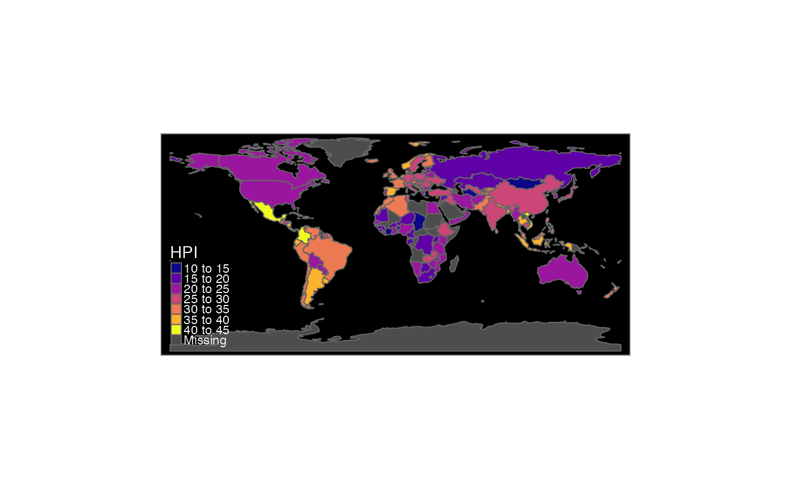

Get or set global options for tmap. The behaviour of tmap_options is similar to options: all tmap options are retrieved when this function is called without arguments. When arguments are specified, the corresponding options are set, and the old values are silently returned as a list. The function tmap_options_reset is used to reset all options back to the default values (also the style is reset to "white"). Differences with the default values can be shown with tmap_options_diff. The function tmap_options_save can be used to save the current options as a new style. See details below on how to create a new style.
tmap_options( ..., unit, limits, max.categories, max.raster, basemaps, basemaps.alpha, overlays, overlays.alpha, qtm.scalebar, qtm.minimap, qtm.mouse.coordinates, show.messages, output.format, output.size, output.dpi, design.mode, check.and.fix ) tmap_options_diff() tmap_options_reset() tmap_options_save(style)
| ... | options from |
|---|---|
| unit | this is the default value for the |
| limits | this option determines how many facets (small multiples) are allowed for per mode. It should be a vector of two numeric values named |
| max.categories | in case |
| max.raster | the maximum size of rasters, in terms of number of raster cells. It should be a vector of two numeric values named |
| basemaps | default basemaps. Basemaps are normally configured with |
| basemaps.alpha | default transparency (opacity) value for the basemaps. Can be a vector of values, one for each basemap. |
| overlays | default overlay tilemaps. Overlays tilemaps are shown as front layer (in contrast to basemaps, which are background layers), so they are only useful when they are semi-transparent. Like basemaps, a vector of tilemaps is expected, or |
| overlays.alpha | default transparency (opacity) value for the overlay maps. Can be a vector of values, one for each overlay map. |
| qtm.scalebar | should a scale bar be added to interactive maps created with |
| qtm.minimap | should a minimap be added to interactive maps created with |
| qtm.mouse.coordinates | should mouse coordinates (and zoom level) be shown in view mode with |
| show.messages | should messages be shown? |
| output.format | The format of the static maps saved with |
| output.size | The size of the static maps saved with |
| output.dpi | The default number of dots per inch for |
| design.mode | Logical that enables the design mode. If |
| check.and.fix | Logical that determines whether shapes ( |
| style | style name |
The options can be divided into three parts: one part contains the arguments from tm_layout, one part contains the arguments from tm_view, and one part contains options that can only be set with tmap_options. Observe that the options from tm_layout and tm_view can also be set with those functions. It is recommended to use tmap_options when setting specific options during global session. However, options that are only relevant for a specific map can better be set with tm_layout or tm_view.
A new style can be created in two ways. The first approach is to use the function tmap_options_save, which takes a snapshot of the current tmap options. E.g., tmap_options_save("my_style") will save the current tmap options as a style called "my_style". See the examples in which a style called "red" is created. The second way to create a style is to create a list with tmap options and with a attribute called style. This approach is illustrated in the last example, in which a style called "black" is created.
The newly created style, say "my_style", will be accessible globally via tmap_style("my_style") and + tm_style("my_style") until the R session is restarted or tmap is reloaded. In order to save the style for future use or sharing, obtain the option list as follows: my_style <- tmap_options() and save the object my_style in the usual way. Next time, the style can be loaded simply by running tmap_options(my_style), which corresponds to the second way to create a style (see the paragraph above).
tm_layout, tm_view, and tmap_style
#> List of 110 #> $ unit : chr "metric" #> $ limits : Named num [1:2] 64 4 #> ..- attr(*, "names")= chr [1:2] "facets.plot" "facets.view" #> $ max.categories : num 30 #> $ max.raster : Named num [1:2] 1e+06 1e+06 #> ..- attr(*, "names")= chr [1:2] "plot" "view" #> $ show.messages : logi TRUE #> $ output.format : chr "png" #> $ output.size : num 49 #> $ output.dpi : num 300 #> $ design.mode : logi FALSE #> $ check.and.fix : logi FALSE #> $ title : logi NA #> $ scale : num 1 #> $ title.size : num 1.3 #> $ bg.color : chr "white" #> $ aes.color : Named chr [1:8] "grey85" "grey40" "grey60" "black" ... #> ..- attr(*, "names")= chr [1:8] "fill" "borders" "symbols" "dots" ... #> $ aes.palette :List of 3 #> ..$ seq: chr "YlOrBr" #> ..$ div: chr "RdYlGn" #> ..$ cat: chr "Set3" #> $ attr.color : chr "black" #> $ sepia.intensity : num 0 #> $ saturation : num 1 #> $ frame : logi TRUE #> $ frame.lwd : num 1 #> $ frame.double.line : logi FALSE #> $ asp : logi NA #> $ outer.margins : num [1:4] 0.02 0.02 0.02 0.02 #> $ inner.margins : logi NA #> $ between.margin : num 0.5 #> $ outer.bg.color : NULL #> $ fontface : chr "plain" #> $ fontfamily : chr "" #> $ compass.type : chr "arrow" #> $ earth.boundary : logi FALSE #> $ earth.boundary.color : NULL #> $ earth.boundary.lwd : num 1 #> $ earth.datum : num 4326 #> $ space.color : NULL #> $ legend.show : logi TRUE #> $ legend.only : logi FALSE #> $ legend.outside : logi NA #> $ legend.outside.position: chr "right" #> $ legend.outside.size : num 0.3 #> $ legend.position : NULL #> $ legend.stack : chr "vertical" #> $ legend.just : chr [1:2] "left" "bottom" #> $ legend.width : num 0.4 #> $ legend.height : num 0.9 #> $ legend.hist.height : num 0.3 #> $ legend.hist.width : num 0.4 #> $ legend.title.color : NULL #> $ legend.title.size : num 1.1 #> $ legend.title.fontface : NULL #> $ legend.title.fontfamily: NULL #> $ legend.text.color : NULL #> $ legend.text.size : num 0.7 #> $ legend.text.fontface : NULL #> $ legend.text.fontfamily : NULL #> $ legend.hist.size : num 0.7 #> $ legend.format :List of 11 #> ..$ fun : NULL #> ..$ scientific : logi FALSE #> ..$ digits : logi NA #> ..$ big.num.abbr : Named num [1:2] 6 9 #> .. ..- attr(*, "names")= chr [1:2] "mln" "bln" #> ..$ prefix : chr "" #> ..$ suffix : chr "" #> ..$ text.separator : chr "to" #> ..$ text.less.than : chr [1:2] "Less" "than" #> ..$ text.or.more : chr [1:2] "or" "more" #> ..$ text.align : logi NA #> ..$ text.to.columns: logi FALSE #> $ legend.frame : logi FALSE #> $ legend.frame.lwd : num 1 #> $ legend.bg.color : logi NA #> $ legend.bg.alpha : num 1 #> $ legend.hist.bg.color : logi NA #> $ legend.hist.bg.alpha : num 1 #> $ title.snap.to.legend : logi NA #> $ title.position : chr [1:2] "left" "top" #> $ title.color : NULL #> $ title.fontface : NULL #> $ title.fontfamily : NULL #> $ title.bg.color : logi NA #> $ title.bg.alpha : num 1 #> $ panel.show : logi NA #> $ panel.labels : logi NA #> $ panel.label.size : num 1 #> $ panel.label.color : chr "black" #> $ panel.label.fontface : NULL #> $ panel.label.fontfamily : NULL #> $ panel.label.bg.color : chr "grey80" #> $ panel.label.height : num 1.25 #> $ panel.label.rot : num [1:2] 90 0 #> $ main.title : logi NA #> $ main.title.size : num 1.5 #> $ main.title.color : chr "black" #> $ main.title.fontface : NULL #> $ main.title.fontfamily : NULL #> $ main.title.position : chr "left" #> $ attr.outside : logi FALSE #> $ attr.outside.position : chr "bottom" #> $ attr.outside.size : logi NA #> $ attr.position : chr [1:2] "right" "bottom" #> $ attr.just : chr [1:2] "left" "bottom" #> $ basemaps : chr [1:3] "Esri.WorldGrayCanvas" "OpenStreetMap" "Esri.WorldTopoMap" #> $ basemaps.alpha : num [1:3] 1 1 1 #> $ overlays : NULL #> $ overlays.alpha : num 1 #> $ qtm.scalebar : logi TRUE #> $ qtm.minimap : logi FALSE #> $ qtm.mouse.coordinates : logi TRUE #> $ alpha : logi NA #> $ colorNA : logi NA #> [list output truncated] #> - attr(*, "style")= chr "white"# get current style tmap_style()#>#>#>#># observe the changed options tmap_options_diff()#>#> $bg.color #> [1] "#002240" #> #> $aes.color #> fill borders symbols dots lines text na null #> "#0088FF" "#002240" "#FF9D00" "#FF9D00" "#FFEE80" "white" "grey60" "grey40" #> #> $aes.palette #> $aes.palette$seq #> [1] "YlGn" #> #> $aes.palette$div #> [1] "RdYlGn" #> #> $aes.palette$cat #> [1] "Set3" #> #> #> $attr.color #> [1] "white" #> #> $basemaps #> [1] "CartoDB.DarkMatter" #> #> $basemaps.alpha #> [1] 0.5 #>############################## # define red style ############################## # change the background color tmap_options(bg.color = "red") # note that the current style is modified tmap_style()#>#># observe the changed options tmap_options_diff()#>#> $bg.color #> [1] "red" #> #> $aes.color #> fill borders symbols dots lines text na null #> "#0088FF" "#002240" "#FF9D00" "#FF9D00" "#FFEE80" "white" "grey60" "grey40" #> #> $aes.palette #> $aes.palette$seq #> [1] "YlGn" #> #> $aes.palette$div #> [1] "RdYlGn" #> #> $aes.palette$cat #> [1] "Set3" #> #> #> $attr.color #> [1] "white" #> #> $basemaps #> [1] "CartoDB.DarkMatter" #> #> $basemaps.alpha #> [1] 0.5 #>#># the specified arguments of tm_layout and tm_view will override the options temporarily: tm_shape(World) + tm_polygons("HPI") + tm_layout(bg.color="purple")# when tm_style_ is called, it will override all options temporarily: tm_shape(World) + tm_polygons("HPI") + tm_layout(bg.color="purple") + tm_style("classic")#># reset all options tmap_options_reset()#># check style and options tmap_style()#>#>#>############################## # define black style ############################## # create style list with style attribute black_style <- structure( list( bg.color = "black","black" aes.color = c(fill = "greyc0", bord"grey40"rey40", "grey40" symbols = "grey80", dots = "grey80", "grey80""grey80" lines = "white", text "white"e", "white" na = "grey30", null = "grey15"),"grey30""grey15" aes.palette = list(seq = "pllist", div "plasma", cat = "PiYG""),"Dark2" attr.color = "white","white" panel.label.color = "white","white" panel.label.bg.color = "grey40","grey40" main.title.color = "white""white" ), style = "black""black" ) # assign the style tmap_options(black_style)#># observe that "black" is a new style tmap_style()#>#># plot the world map again, this time with the newly created black style tm_shape(World) + tm_polytm_polygons"HPI"# reset all options tmap_options_reset()#>